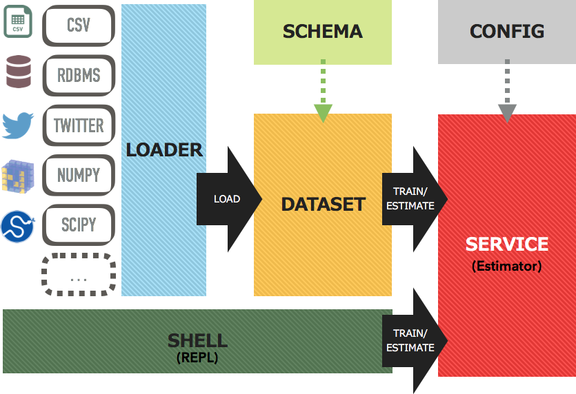

アーキテクチャ¶
Jubakitのアーキテクチャ概要を以下に示します:
Jubakitは6つのコンポーネントから構成されています。
- Loader はCSVファイル、RDBMS、MQ、TwitterストリームなどのKey-Value型で定義された様々な情報源からデータを取得します。
- Schema はLoaderで読み込んだデータのKeyに対して、テキスト、数値やラベルなどのデータ型を定義します。
- Dataset はSchemaを利用して、Loaderで読み込んだデータをDatum型変換します。Datasetはレコードの配列の抽象的表現です。
- Service はDatasetに含まれる各レコードを利用して、Jubatusサーバに対してupdateやanalyzeといったRPCコールを行い、結果を取得します。
- Config はServiceのパラメータを定義します。
- Shell はJubatusサーバとの対話的なコマンドラインインターフェースを提供します。
Schema 、Dataset および Config は各 Service に対して個別に定義されます。例えば、jubakit.classifier.Classifier サービスを利用する場合には、jubakit.classifier.Schema を利用する必要があります。py:class:jubakit.anomaly.Schema を利用することはできません。